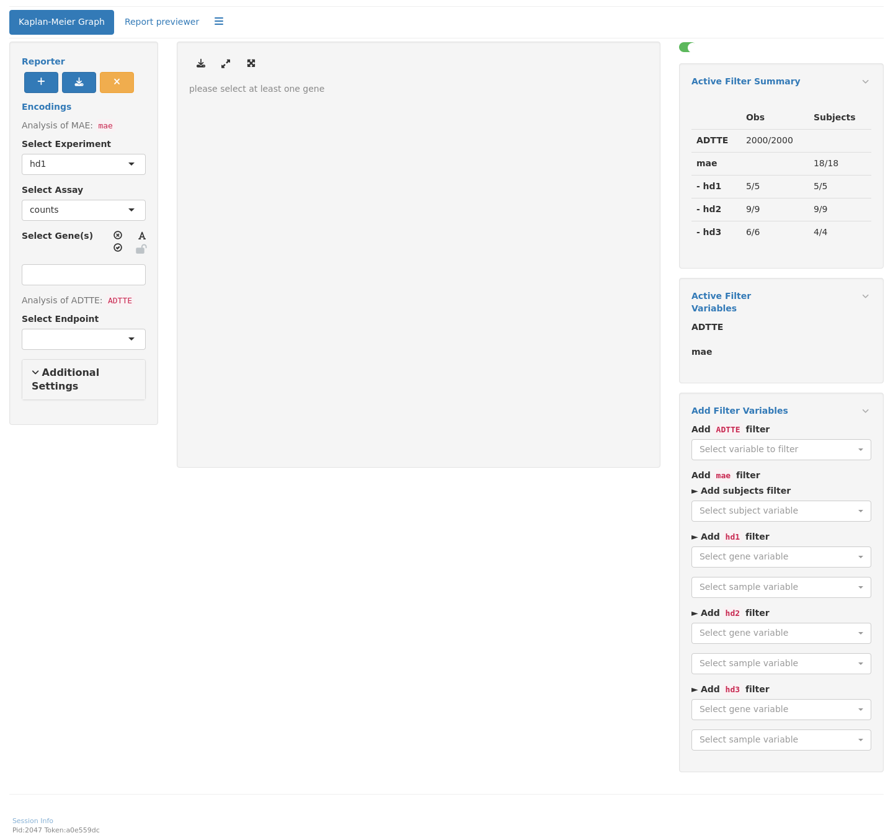

RNAG9
RNAseq Kaplan-Meier Graph
This page can be used as a template of how to produce Kaplan-Meier graphs for RNA-seq gene expression analysis using available tern and hermes functions, and to create an interactive Kaplan-Meier graph for RNA-seq gene expression analysis using teal.modules.hermes.
The code below needs both RNA-seq data (in HermesData format) and time-to-event data (in ADTTE format) as input.
We first prepare the time-to-event data. We define an event indicator variable, transform the time to months and filter down to the overall survival subset.
Then we prepare the RNA-seq data. See RNAG1 for basic details on how to import, filter and normalize HermesData. We use col_data_with_genes() to extract the sample variables (colData) from the object, together with a single specified gene or a specified gene signature. See ?hermes::gene_spec for details on how to do this. Then we use inner_join_cdisc() to join this genetic data with the ADTTE data from above. See the help page for more details, in particular how the join keys can be customized if needed - here we just join based on USUBJID by default.
We can then cut the resulting gene column (we figure out the column name and save it in arm_name below) in the joined_data into quantile bins (in this example we want three equally sized groups).
It is now simple to create the Kaplan-Meier graph by providing the data set created above with the variable specification. Note that we specify the above created gene_factor as arm variable here.
Code

See KG1 to KG5 for additional customization options for the Kaplan-Meier graphs or the help page ?g_km().
We start by importing a MultiAssayExperiment and sample ADTTE data; here we use the example multi_assay_experiment available in hermes and example ADTTE data from scda. We can then use the provided teal module tm_g_km to include the corresponding interactive Kaplan-Meier analysis in our teal app. Note that by default the counts assay is excluded via the exclude_assays argument, but we can include it by just saying that we don’t want to exclude any assays. In case that we have different non-standard column names in our ADTTE data set we could also specify them via the adtte_vars argument, see the documentation ?tm_g_km for more details.
Code
library(teal.modules.hermes)
mae <- hermes::multi_assay_experiment
adtte <- scda::synthetic_cdisc_data("rcd_2022_06_27")$adtte %>%
dplyr::mutate(is_event = .data$CNSR == 0)
data <- teal_data(
dataset(
"ADTTE",
adtte,
code = 'adtte <- scda::synthetic_cdisc_data("rcd_2022_06_27")$adtte %>%
dplyr::mutate(is_event = .data$CNSR == 0)'
),
dataset("mae", mae)
)
app <- init(
data = data,
modules = modules(
tm_g_km(
label = "Kaplan-Meier Graph",
adtte_name = "ADTTE",
mae_name = "mae",
exclude_assays = character()
)
)
)[INFO] 2023-10-04 17:39:42.7461 pid:3367 token:[] teal.modules.hermes Initializing tm_g_km
R version 4.3.1 (2023-06-16)
Platform: x86_64-pc-linux-gnu (64-bit)
Running under: Ubuntu 22.04.3 LTS
Matrix products: default
BLAS: /usr/lib/x86_64-linux-gnu/openblas-pthread/libblas.so.3
LAPACK: /usr/lib/x86_64-linux-gnu/openblas-pthread/libopenblasp-r0.3.20.so; LAPACK version 3.10.0
locale:
[1] LC_CTYPE=en_US.UTF-8 LC_NUMERIC=C
[3] LC_TIME=en_US.UTF-8 LC_COLLATE=en_US.UTF-8
[5] LC_MONETARY=en_US.UTF-8 LC_MESSAGES=en_US.UTF-8
[7] LC_PAPER=en_US.UTF-8 LC_NAME=C
[9] LC_ADDRESS=C LC_TELEPHONE=C
[11] LC_MEASUREMENT=en_US.UTF-8 LC_IDENTIFICATION=C
time zone: Etc/UTC
tzcode source: system (glibc)
attached base packages:
[1] stats4 stats graphics grDevices utils datasets methods
[8] base
other attached packages:
[1] teal.modules.hermes_0.1.5.9005 teal_0.14.0.9009
[3] teal.transform_0.4.0.9004 teal.slice_0.4.0.9014
[5] teal.data_0.3.0.9005 shiny_1.7.5
[7] hermes_1.0.1.9019 SummarizedExperiment_1.30.2
[9] Biobase_2.60.0 GenomicRanges_1.52.0
[11] GenomeInfoDb_1.36.3 IRanges_2.34.1
[13] S4Vectors_0.38.2 BiocGenerics_0.46.0
[15] MatrixGenerics_1.12.3 matrixStats_1.0.0
[17] ggfortify_0.4.16 ggplot2_3.4.3
[19] dplyr_1.1.3 tern_0.9.1
[21] rtables_0.6.4.9000 magrittr_2.0.3
[23] formatters_0.5.3.9000
loaded via a namespace (and not attached):
[1] RColorBrewer_1.1-3 rstudioapi_0.15.0
[3] jsonlite_1.8.7 shape_1.4.6
[5] nestcolor_0.1.2.9006 MultiAssayExperiment_1.26.0
[7] scda_0.1.6.9012 farver_2.1.1
[9] rmarkdown_2.25 GlobalOptions_0.1.2
[11] zlibbioc_1.46.0 vctrs_0.6.3
[13] memoise_2.0.1 RCurl_1.98-1.12
[15] webshot_0.5.5 htmltools_0.5.6
[17] S4Arrays_1.0.6 forcats_1.0.0
[19] progress_1.2.2 curl_5.0.2
[21] broom_1.0.5 sass_0.4.7
[23] bslib_0.5.1 fontawesome_0.5.2
[25] htmlwidgets_1.6.2 cachem_1.0.8
[27] teal.widgets_0.4.0.9013 mime_0.12
[29] lifecycle_1.0.3 iterators_1.0.14
[31] pkgconfig_2.0.3 Matrix_1.6-1.1
[33] R6_2.5.1 fastmap_1.1.1
[35] GenomeInfoDbData_1.2.10 rbibutils_2.2.15
[37] clue_0.3-65 digest_0.6.33
[39] colorspace_2.1-0 shinycssloaders_1.0.0
[41] ps_1.7.5 AnnotationDbi_1.62.2
[43] RSQLite_2.3.1 filelock_1.0.2
[45] labeling_0.4.3 fansi_1.0.4
[47] httr_1.4.7 abind_1.4-5
[49] compiler_4.3.1 bit64_4.0.5
[51] withr_2.5.0 doParallel_1.0.17
[53] backports_1.4.1 DBI_1.1.3
[55] logger_0.2.2 biomaRt_2.56.1
[57] rappdirs_0.3.3 DelayedArray_0.26.7
[59] rjson_0.2.21 tools_4.3.1
[61] httpuv_1.6.11 glue_1.6.2
[63] callr_3.7.3 promises_1.2.1
[65] grid_4.3.1 checkmate_2.2.0
[67] cluster_2.1.4 generics_0.1.3
[69] gtable_0.3.4 tidyr_1.3.0
[71] hms_1.1.3 xml2_1.3.5
[73] utf8_1.2.3 XVector_0.40.0
[75] ggrepel_0.9.3 foreach_1.5.2
[77] pillar_1.9.0 stringr_1.5.0
[79] later_1.3.1 circlize_0.4.15
[81] splines_4.3.1 BiocFileCache_2.8.0
[83] lattice_0.21-8 survival_3.5-7
[85] bit_4.0.5 tidyselect_1.2.0
[87] ComplexHeatmap_2.16.0 Biostrings_2.68.1
[89] knitr_1.44 gridExtra_2.3
[91] teal.logger_0.1.3.9005 xfun_0.40
[93] stringi_1.7.12 yaml_2.3.7
[95] shinyWidgets_0.8.0 evaluate_0.21
[97] codetools_0.2-19 tibble_3.2.1
[99] cli_3.6.1 xtable_1.8-4
[101] Rdpack_2.5 processx_3.8.2
[103] jquerylib_0.1.4 munsell_0.5.0
[105] teal.reporter_0.2.1.9007 Rcpp_1.0.11
[107] dbplyr_2.3.3 png_0.1-8
[109] XML_3.99-0.14 parallel_4.3.1
[111] ellipsis_0.3.2 assertthat_0.2.1
[113] blob_1.2.4 prettyunits_1.2.0
[115] bitops_1.0-7 scales_1.2.1
[117] purrr_1.0.2 crayon_1.5.2
[119] GetoptLong_1.0.5 rlang_1.1.1
[121] formatR_1.14 KEGGREST_1.40.0
[123] shinyjs_2.1.0